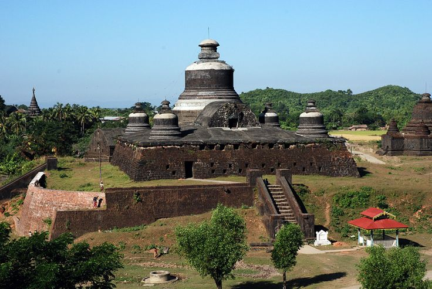
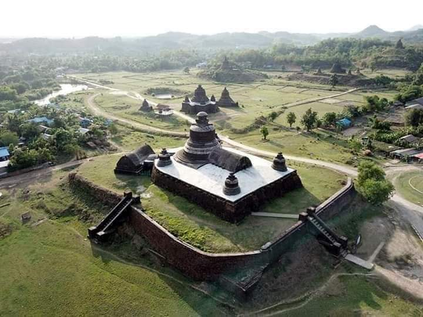
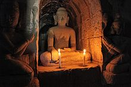
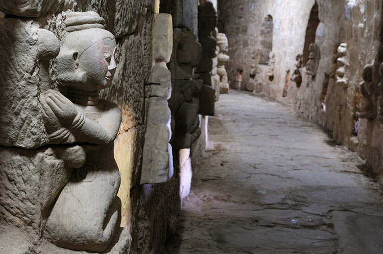
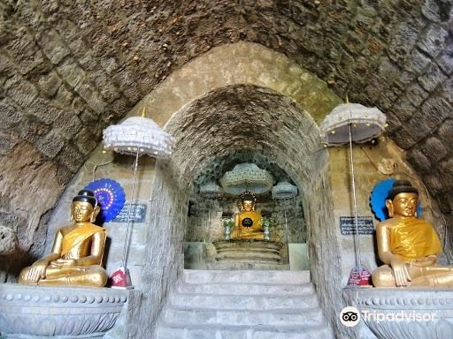
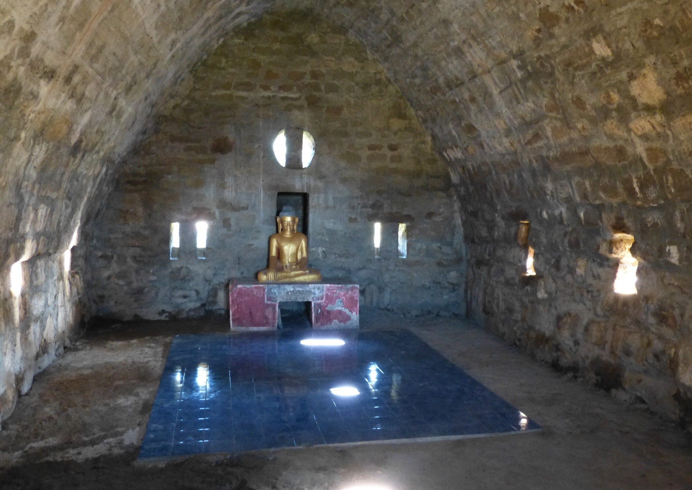
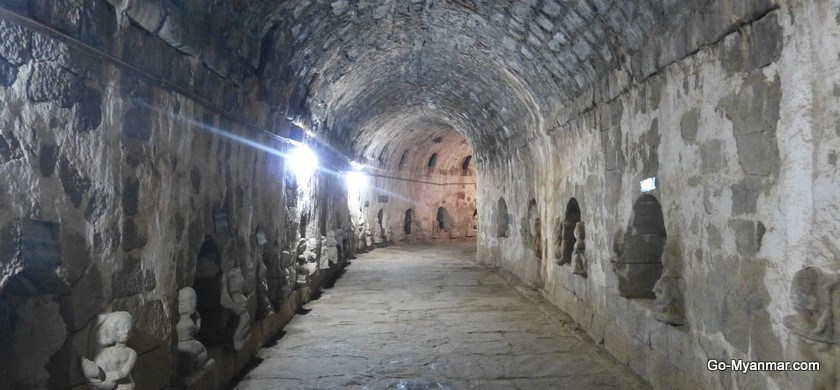
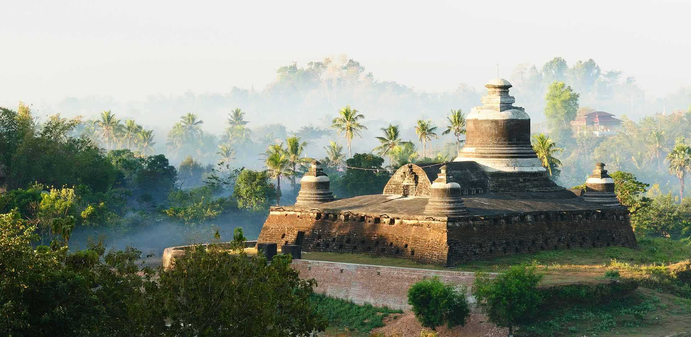

Htoke Kan Thein Temple
Dukkanthein also called as Htukanthein or Htoekanthein. stands on a hill which is about 30 feet in height. Its
structure is like a flat surface in the form of a drum. King Minphalaung built the pagoda in 1571 A.D.



Like most of the ancient monuments in Mrauk U. Dukkanthein was built with sandstones and layers of bricks over
the roof. The measurement of the temple is 190 feet from north to south and 200 feet from east to west. It has
stone stairways about 8 inches broad in the east and south sides. These stairways measuring 106 feet are built
of massive stonewall on the north. east and south. The west one which is slightly convex is connected to an
oblong chamber.



The pagoda entrance on the east side. closer to the south-east corner. leads to a long vaulted passage which
spirals up in two tiers till it reaches the central chamber. The superstructure. a bell-shaped dome on receding
terraces. is similar to the one on Shitthaung. but here a tall square arch is provided on the east side to admit
light into the central chamber. The inner chambers and passages of the temple are constructed with well fitting
and cemented stones. The pagoda is well-known for the stone sculptures in the vaulted passages.


especially the
figures of seated ladies. with different styles of coiffure. in the manner of offering lotus buds to the Buddha.
Traditionally it is said that there are sixty-four kinds of hairstyle and all the figures are of the wives of
noblemen. Besides. on both sides of the entire passage. niches of 1½ feet broad. 1 foot deep. and 2 feet high
are dug at regular intervals of 20 feet in the wall and each contains a stone image of the Buddha in sitting
posture. There are one hundred and forty-six niches along the passage.